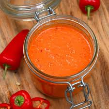

You're in a Hell, and You're Gonna Die in a Hell
Just Like the Rest of 'Em Hot Sauce

Description
We need to sort somethin' out right here and now. The closest I usually get to hot is when I cruise over steaming
manhole covers in my cab at 3am. When I want an inferno filled with demons, I drive through the Bronx.
Some say variety is the spice of life. I have to disagree. Spice is the spice of life. Suck on this!
Ingredients
- Around 20 hot peppers.
- 1 1/2 cups apple cider vinegar.
- Minced garlic, whatever you want.
- Other seasonings. Use your imagination. Just don't forget the salt, ok?
Steps
- Slice the peppers lengthwise. Imagine something terrible and/or Calvinist when you do it.
- Boil the peppers in a pan with the vinegar. Stare into the bubbles until the slow zoom is finished.
- Get those peppers soft like the skin of a woman who rejects you.
- When they're soft, just pour all that scum in a blender. Seeds and everything. Blend it up.
- Bottle it, keep it in a bowl. Just don't put your hands in your pants without washing them first.
BACK TO HOME